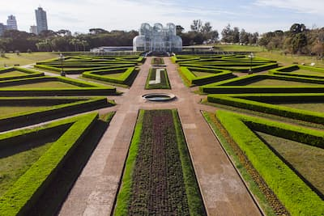

Curitiba é conhecida pelos parques arborizados, clima frio durante o inverno e sistema de transporte coletivo reconhecido internacionalmente. A cidade possui atrações famosas como o Jardim Botânico e o Parque Barigui muito visitados por moradores e turistas. Além disso Curitiba valoriza sustentabilidade organização urbana e diversos eventos culturais ao longo.
Durante o Natal, Curitiba recebe decorações especiais e apresentações culturais em diferentes regiões da cidade. Muitos visitantes aproveitam os cafés, museus e feiras locais para conhecer melhor a capital paranaense.

